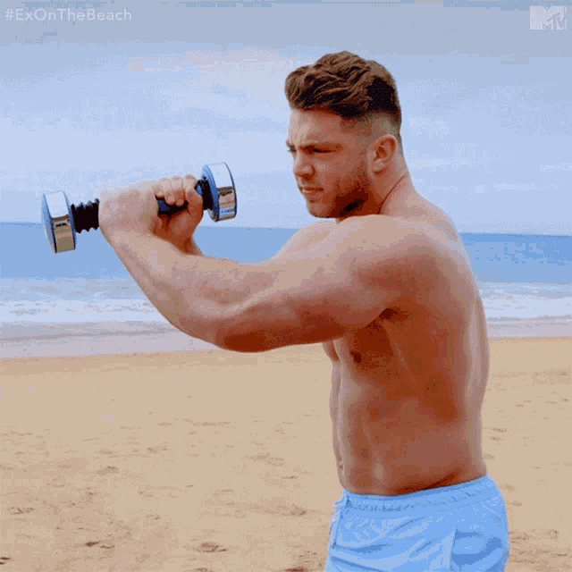

- Mens Shakeweight
- GO FROM FLABBY TO FIRM - The dynamic inertial attribute of our arm toner ignites your arm, shoulder and chest with rhythmic vibrations. Based on scientific study, this shake weight men gives 300% of muscle activity compared to regular weights!
- EASIEST AND MOST EFFECTIVE WORKOUTS - Our shake weight for women tones your entire upper body from chest to biceps, triceps and shoulders adequately in just 6 minutes/day, equivalent to 42 minutes of using standard dumbbells with about 240 reps per minute.
- PORTABLE FITNESS TOOL WITH ERGONOMIC HANDLE - Our arm workout equipment for women weighs 5 lbs with dimension of 14 x 5 x 4.7”. Apply in various positions, double or single hand slide or behind the head, its ergonomic handle ensures anti-slip workout grip!